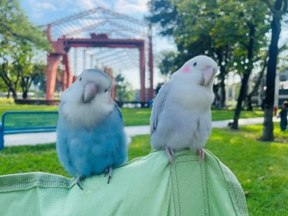
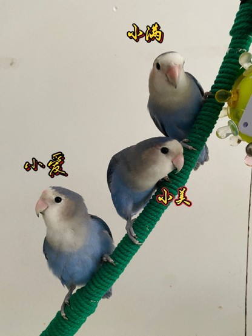
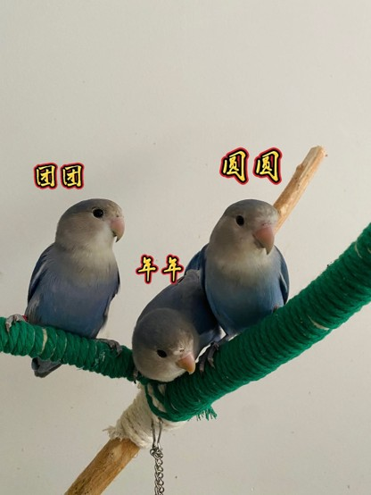
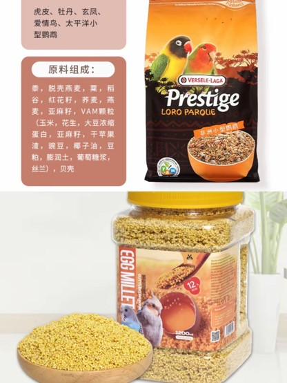
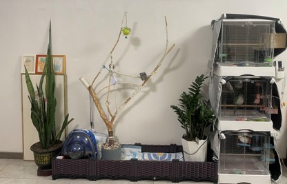

两只牡丹鹦鹉（爱情鸟），生下六只可爱宝宝，小美·小满·小爱·圆圆·团团·年年，温馨八口之家，活泼治愈

平安和喜乐是一对形影不离的牡丹鹦鹉伴侣，和平安感情深厚。平安基因强大，六只宝宝都与爸爸一个色系，是这一大家子的起点。


体型小巧圆润，体重轻盈，活泼大胆，精力旺盛，爱蹦跳、爱啃咬、爱探索周围环境，性格粘人。牡丹鹦鹉色彩非常丰富，人工繁育花色繁多，市面上最常见、颜值最高的品种主要有：绿桃、黄桃、紫罗兰、蓝银、绿银、奥桂、薰衣草等等。所有牡丹鹦鹉体态一致，圆头圆嘴、短尾圆润，整体小巧精致，观赏性极强。
牡丹鹦鹉天生亲人，喜欢与人互动玩耍，是非常棒的伴侣鹦鹉。
无论哪个品种，牡丹鹦鹉的圆润体态和丰富色彩都极具观赏性，越看越喜欢。
对环境变化适应快，体质好、不易生病，是新手养鸟的理想选择之一。
精力充沛、动作灵巧，日常一举一动都充满治愈感，是生活中的小太阳。
叫声清脆有节奏感，虽比玄凤响亮但不刺耳，充满生命力。

日出而作日落而息，保持稳定的光照周期有助于健康和情绪稳定。
牡丹鹦鹉非常爱干净，喜欢用清水洗澡理羽。
精力旺盛需要充足的活动空间，每天应有笼外放飞时间满足运动量。

牡丹鹦鹉是颜值高、体质好、互动性极强的小型伴侣鹦鹉。它们忠诚粘人、活泼可爱，自带浪漫的"爱情鸟"寓意，日常灵动治愈、饲养门槛低。只要耐心陪伴、科学喂养、用心照料，小小的牡丹鹦鹉会成为长久治愈生活的温暖陪伴。